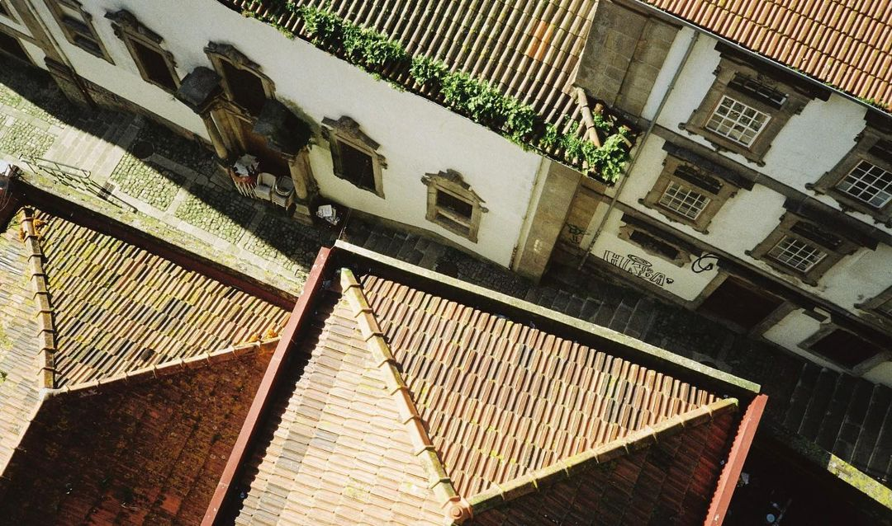
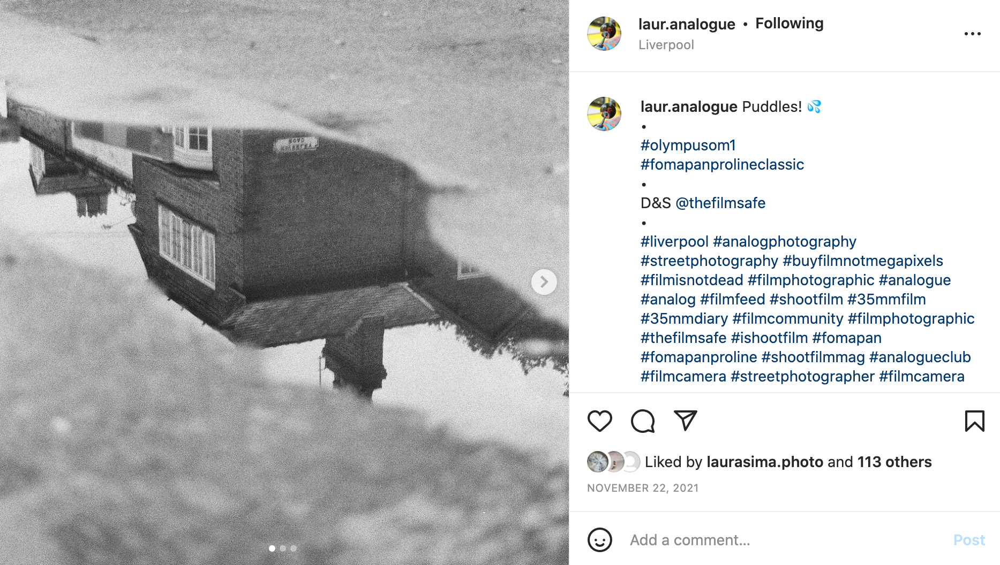

Thanks for viewing my portfolio
I shoot in 35mm film on my olympus OM-1n and mainly capture life in and around Liverpool.
Take a look at my portfolio and take a trip around Liverpool told in analogue film.
Check out my Instagram
My Instagram is the best place to see my more candid shots and to keep up with my photography journey through stories and reels.
Send me a message and comment on my pictures there to engage with me and others in the photography community.
